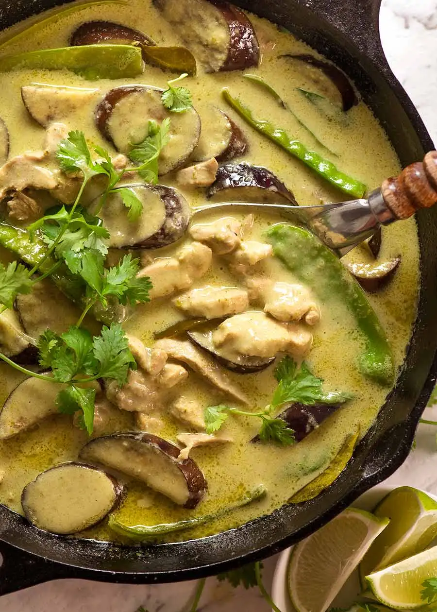

Back to Recipe List
Thai Green Curry

This recipe came from here: Thai Green Curry Recipe
Ingredients
- 4-6 tbsp Thai Green Curry Paste
- 2 Large Garlic Cloves
- 2 tsp Fresh Ginger
- 1 tbsp Lemongrass Paste
- 2 tbsp Vegetable Oil
- 1 cup of Chicken Broth (Low Sodium Preferred)
- 12 oz (400 g) of Coconut Milk
- 1-3 tsp of Fish Sauce
- 1-3 tsp of White Sugar
- 1/8 tsp of Salt
- 1 Lime
- 12 oz (350 g) of Sliced Boneless Chicken Thighs
- 2 Japenese Eggplants (small, 1 cm slices)
- 1.5 cups of Snow Peas
- 16 Thai Basil Leaves
- Green or Red Chillies Slices
Instructions
- Heat oil in a heavy based skillet or pot over medium high heat
- Add curry paste, garlic cloves, fresh ginger, and lemongrass and cook for 2 to 3 minutes
- Add chicken broth and coconut milk, mix to dissolve paste
- Add in sugar, fish sauce, sugar, and salt to the broth after paste has dissolved
- Add in Chicken, stir and then lower heat to medium so its bubbling gently. Cook for 7 minutes
- Add eggplants, cook for 5 minutes until soft
- Taste sauce. Feel free to add in more fish sauce/salt for a saltier flavor or sugar for a sweeter flavor
- Add snow peas, cook for 2 minutes until soften, then stir in basil and lime juice. Sauces should be more thin, do not keep simmering or else it will reduce which we don't want
- Garnish with chillies and serve